TUGDUAL
EPFL, 3rd year computer science
RADÖ
When walking behind the student bar of our school I noticed that the plastic keykegs were being loaded into a truck. Apparently they are recycled when empty. With the help of a very large metal frame that was laying around we decided to make a raft with some friends. We then went to the lake to test it out. There was enough buoyancy for a total of 7 people on it! Doors of metal lockers were used without much efficiency to paddle around. An overall success :)
TREBUCHET
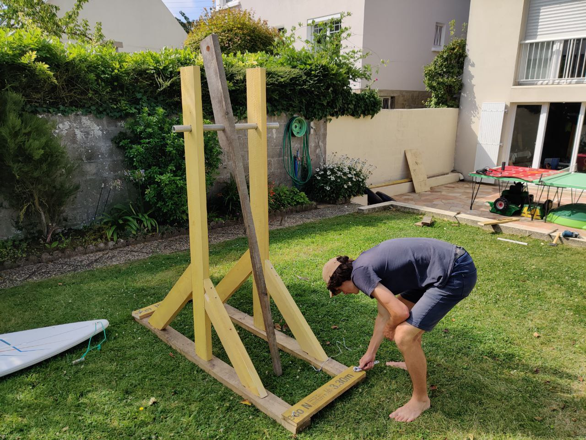Bored during the summer holidays with two friends we decided it would be a good time to build a weapon of mass destruction. We took some wood from grandpa and got to work building the medieval potato launcher that would be this project. The hardest part was finding a good counterweight, but thankfully grandpa saved the day by giving us a car battery. We also ended up in the regional news paper.
CADRE
Both of my grandparents live near the sea. Using 3mm medium density fiberboard and some tinted black plexiglass I decided to make them some maps of their area. I used snazzymaps.com to create a black and white theme of their cities with the roads. One of the frames was done with wood from a waste disposal and the other adapted from an old frame to fit the map.
PotAGEP

Avec Marie nous avons amenagee le terrain devant le local de l'AGEPoly pour la deuxieme annee de suite. Nous y avons plantee: 2 courgettes, 2 concombres, des haricots grimpants, 6 plants de tomates et un oeillet d'inde qui repousse les nématodes pour les tomates, des radis, des carottes, 2 basilics, 24 salades, de la ciboulette, un groseillier, 2 framboisiers, un piment, du thym, et du persil. Cout total: ~100 CHF de plantons et graines.
TRANSPALETTE

Dimanche matin je suis tombé sur une annonce pour un transpalette sur Facebook marketplace pour 80 CHF. J'ai pris la décision de louer une voiture et aller le chercher, puis dans les prochains jours le poncer et repeindre. La peinture m'aura coûté 30 CHF en plus.
LAMP
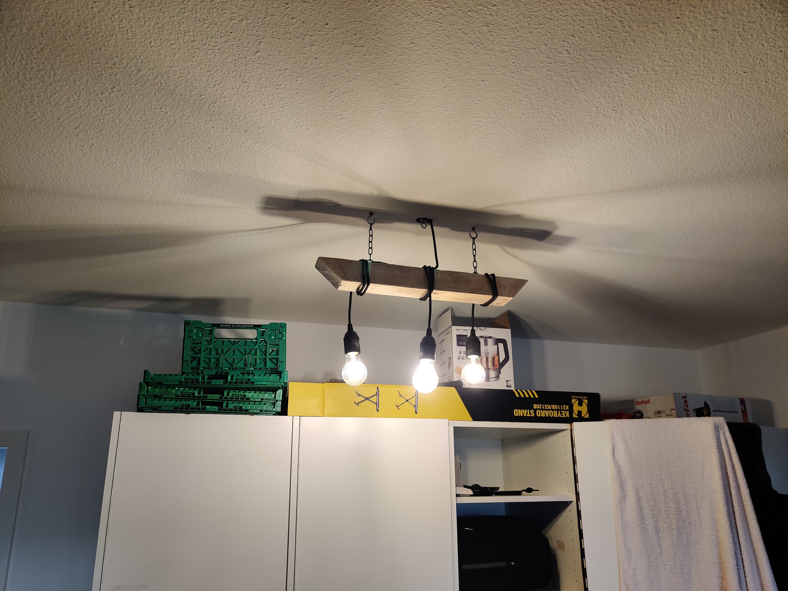Our flat in which I live with 3 other people had a lot to improve on. One of the main problems was lighting, which initially was provided by one poor light. Poor lighting makes it hard to work and stay concentrated. With Jeanne I decided it was time for a change. Went to OBI (The hardware store) a total of 5 times to finally obtain all the necessary things to build the lamp. It took a total of 15h to wire up and sand everything and finally obtain a product that lit of the room in a more uniform and brighter fashion!
SJOELBAK

Back From Paques, an event organized by AGEPoly (Association for the students of EPFL) budgeted 150 CHF for me to build this famous dutch shuffleboard. Measurements were taken rapidly from this site. The wood cost ~70 CHF and the varnish another 10. The little peices of wood were made out of truck flooring plywood and a CNC. A dark varnish allowed the material to look more authentic
MUN SIGN
During the vacation of 2019 I used the SKIL to create a new Sign Plate for MUN, in our entrance of our headquarters CO116 it is composed of two PMMA, one white for the background and a transparent one with a combination of a black and red vinyl stickers cut out with a Silhouette 3.
THE WHEEL
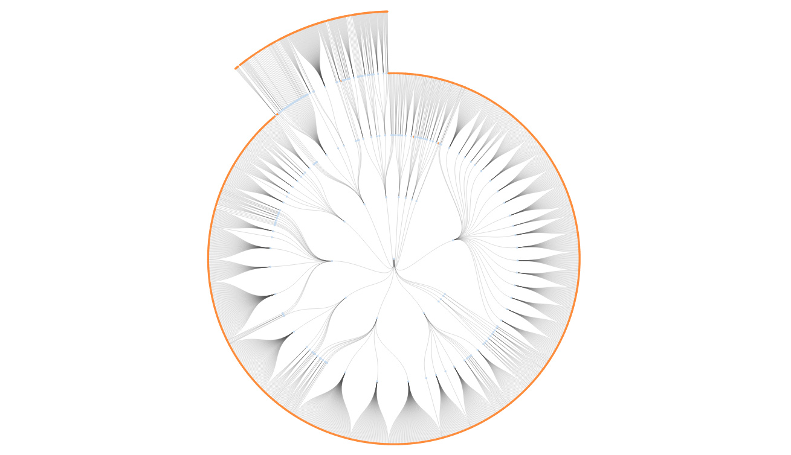During this summer I got the idea of downloading the dataset of all the units at EPFL and representing them with D3.js, a javascript library for data visualisation. This project allowed me to better understand how this language works, and what typical coding parterns are used in it. In the future I would like to add the option to see the people in each unit, optimise it so it doesn't slow down computers too much and make a version with history in mind.
AUTOMATIC POSTING

People don't regularly visit websites anymore without having notifications. If only RSS was still something people used! Although in the future I plan on adding it for now I wanted to be able to avoid doing redundant work by being able to post what I do on Telegram but also automatically post it on my website. Now whenever a post appears on t.me/tugdualupdates it is automatically added to my website as well!
STICKER DETECTION
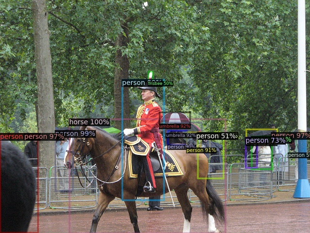For my semester project of my EPFL Bachelors, I decided to rebuild my dinosaur detector but generalize it to being able to detect any sticker in my area. This used Facebook's python library Detectron2 and an implementation of Few-Shot papers by Oscar Knagg. Overall the project was a success and I wish to spend more time on it later on.

BARNABE
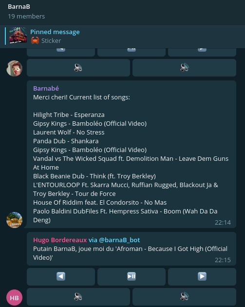The headquarters of the Sysmic association have a projector and really apreciate listening to music on youtube through it. Unfortunately there is always the need to be connected to the HDMI cable. Thanks to a RPI B+ and some simple python code I am able to have a bot which will respond to @barnab on a specific group, suggest youtube songs and respond. One can click on pause/play, next, previous and increase or lower the volume of the projector all from the bot.

MY NAME ON MARS
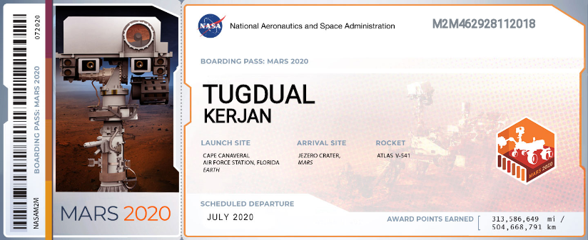For the Perseverance rover it was possible to add our name onto an engraved plate that would go with it on its launch in July 2020 onboard the Atlas V 541 rocket, along with a cool 10 million other people!
FREE REMOTE FOR PRESENTATIONS
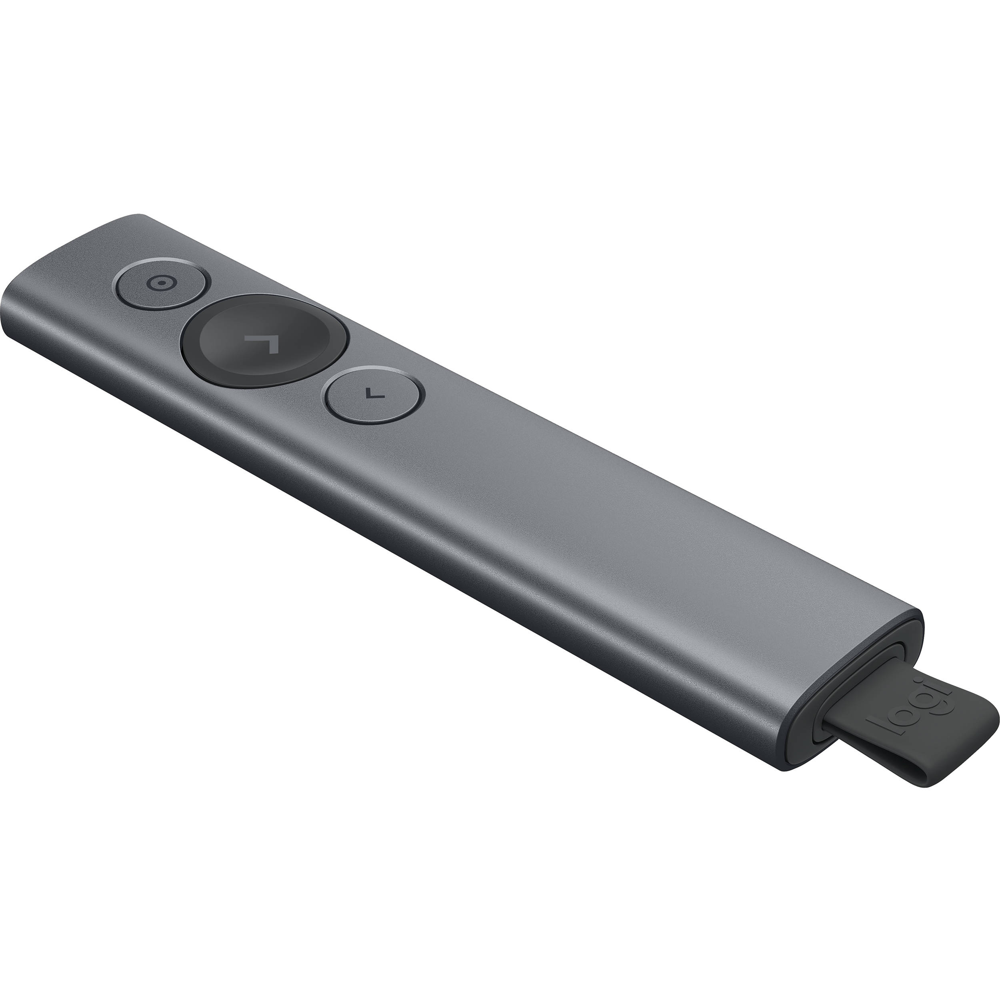Instead of studying ProbaStat for my exams, I procrasinated by giving myself a remote to present my Semester Project, but without having to spend 100$ on some random remote. This bot simply recreates the keyboard presses I typically use for my presentations (Space, left, right...). This project took around ~15 minutes to complete, from start to finish! New record :^)
CALVIN AND HOBBES
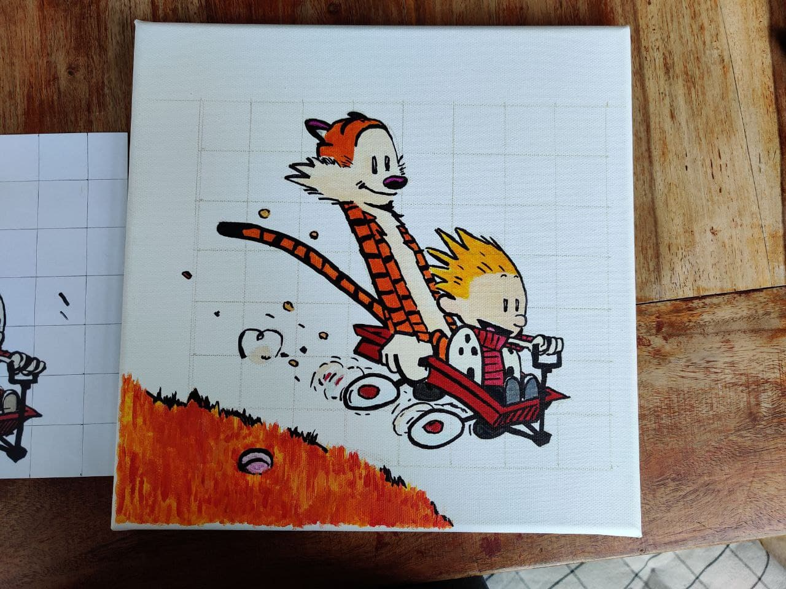On a whim when back from EPFL to vacation for Easter with the family I asked my Mom if she could teach me how to paint. I had already painted, but a long time ago and I feel like I have a sort of helplessness associated with just not knowing where to start for things a simple as painting. This also applies in Sowing, Woodworking, Car reperations and, probably forever seeing as how complex the field is, Computer Science.
SUGAR ROCKETS
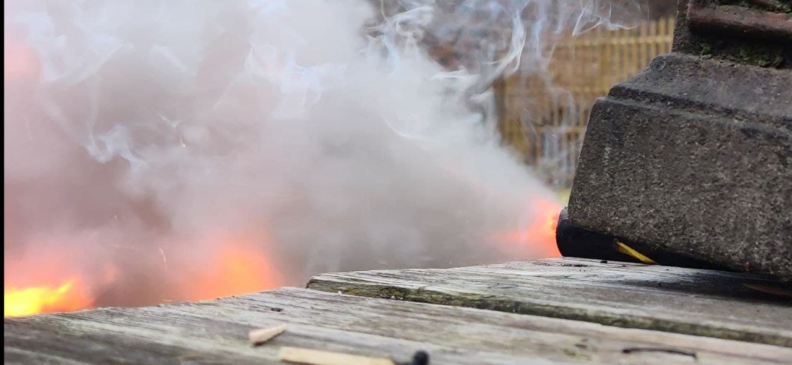Once again bored during quarantine and having completed the DARPA Potato Canon, I wanted to go a little further. The obvious answer is building rockets, so after a little research and the wonderfully documented blog of Richard Nakka, I decided to go for the classic potassium nitrate (KNO3) + sugar rockets. Just like your car, your rocket needs oxygen and a fuel. Instead of using petrol we will use sugar, and instead of using the oxygen of the atmosphere we will grab them from the potassium nitrate. We grabbed some sodium nitrate from the gardening store and some potassium chloride from the pharmacy (A common replacement for salt). Did a double displacement reaction and ended up with our long awaited for potassium nitrate. Some tests reveal flamboyant success, and, don't tell mom but when mixing another batch later on it exploded and my hair burt to a crisp. Thankfully I was wearing goggles and a mask, so my moustache is intact.
WOODEN ELEMENTS
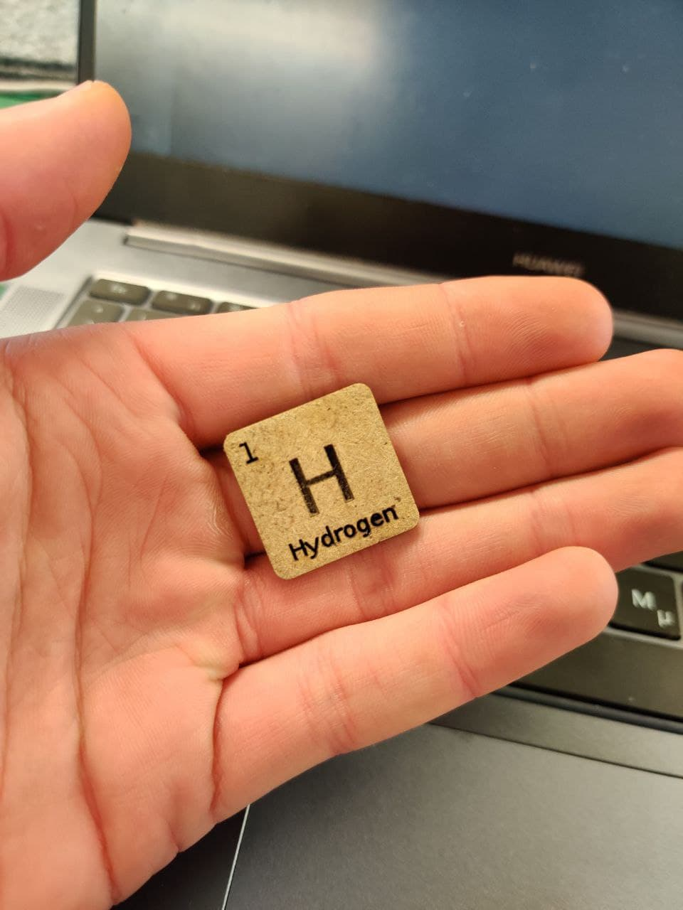I absolutely love chemistry, and thus I decided it would be awesome to laser cut some periodic table of elements with a collectable like feeling to them (Basically make them look cute). To acheive this I used a multitude of programs and loopholes so as to automatise the process of editing each name. I started by downloading a csv with all the elements and their numbers, then designing the basic template token in inkscape, then using a python program to copy paste and change the number, symbol and name and paste the elements one next to another. I then transform it using SVG to DXF

MUN SITE

For the MUN association of at EPFL we wanted to improve the site as the current one simply wasn't attractive enough. This was part of a bigger initiative to have a clearer and more consistent image of MUN EPFL, as the last years it had been with defracted. Using simple HTML and CSS we were able to build a clean and readble website the perfect amount of information
SPONGEBOB AT EPFL

When I learned that there was a way to print my own plastic cards using a machine at EPFL I decided it was time to sign spongebob up for EPFL. I spent around 2-3h working on copying pixel for pixel the camipro standard, and then changing the information and picture on it for spongebob. Doing this, I learned a few things in the domain of printers (How to register them, send jobs etc) as well as the standards used in plastic cards (Such as that they are 86mm x 54mm)

AUTOMATÉ

Lors d'un cours d'archord, avec Elior on a eu l'idee fantastique de creer une machine qui automatiserais la vente de club mates, des boissons remplies de caffeine. Apres quelques dessins de design, nous avons commencee a construire la boite dans laquelle une personne se mettrais et donnerait un mate a ceux qui vennait appuyer sur un bouton. Malheureusement le projet ne s'est jamais acheve.

HEADPHONES
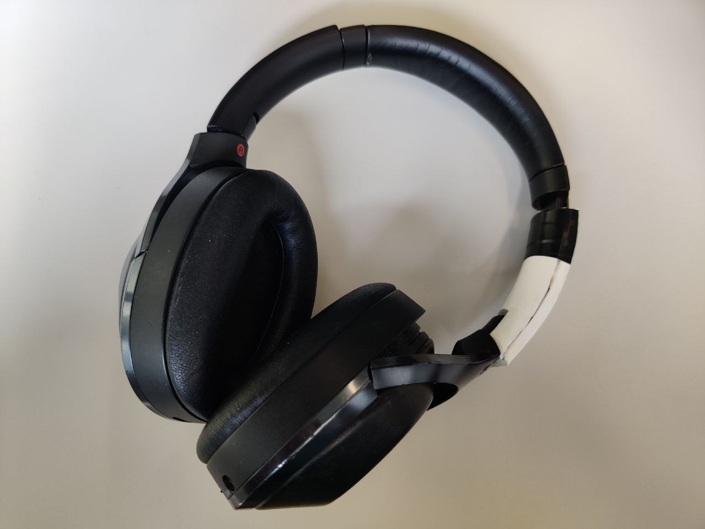The MDR-1000X headphones that I bought cost 250 Euro, but unfortunately broke (Probably because of the cold...). I looked online and noticed that I wasn't the only one that had this problem. A few prints later after having found 3-4 potential models I was able to print a 3d piece that managed to fit but wasn't too feeble. Problem solved!
LE CHURROS
EPFL decided to install this weird ass sculpture on the diagonale, a popular walkway. Seeing as there was no name on it, with the inspiration of a friend we decided to baptise it Le churros, 1999, (Not edible) The actual name of the structure is Beton, made in the 70s.


LASER DINOSAUR

At SKIL at EPFL, for the project of the hidden dinosaurs I decided to create a small gift for those who would be able to find all of them. After some experimenting I came up with a design of 4 layers so as to give it depth, and using the eyes as an anchor point for the layers.

SHYPOOPER

Finally, a web application that's capable of accumulating the fine knowledge of which bathrooms are the best at EPFL. Thanks to this site coded using OpenLayers, MongoDB and Express one can check the quality of a variety of bathrooms at EPFL

LAUSANNE TO LILLE
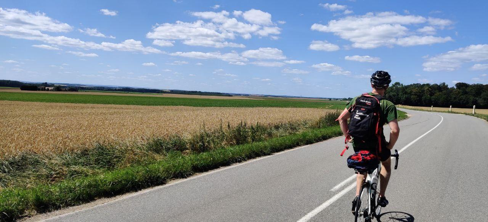With Augustin decided it would be a good idea to bike all the way back from Lausanne to Lille by bike. Took a sore ass, 4 days of biking and one afternoon of traversing the Jura hungover to acheive this dumb idea. Left with just a backpack, no sleeping bag nor tent. Used WarmShowers to find splaces to sleep.

TYPING SPEED

After reseting my computer because I had accidentaly corrupted my Ubuntu, I was presented with the option to select a keyboard layout. I decided to go with Colemak, which had been specificaly designed to be more efficient at typing compared to Qwerty. Over the course of 2 weeks I went from 0 wpm to 50! I am currenty working on punctuation and coding, as those also rely on muscle memory.

DARPA POTATO GUN

Bored on a saturday morning with Charles and Come, we decide that it is time we made a potato gun. Ingredients: Potato, PVC and lighter. Surprisingly powerful, especially given that less fuel gives a more potent explosion (Ratio of Oxygen?)

ANKI ELEMENTS

The second deck I chose to work on after the World countries one is dedicated to the periodic table of elements, namely the name, atomic number and symbol. It took me 1 month to learn, 10 minutes a day. This confirmed the efficiency of Anki which I since then use to store notes about classes and programming. This also introduced me to the art of memory as it used small images associated to each element so as to help the learning process.
THIS WEBSITE
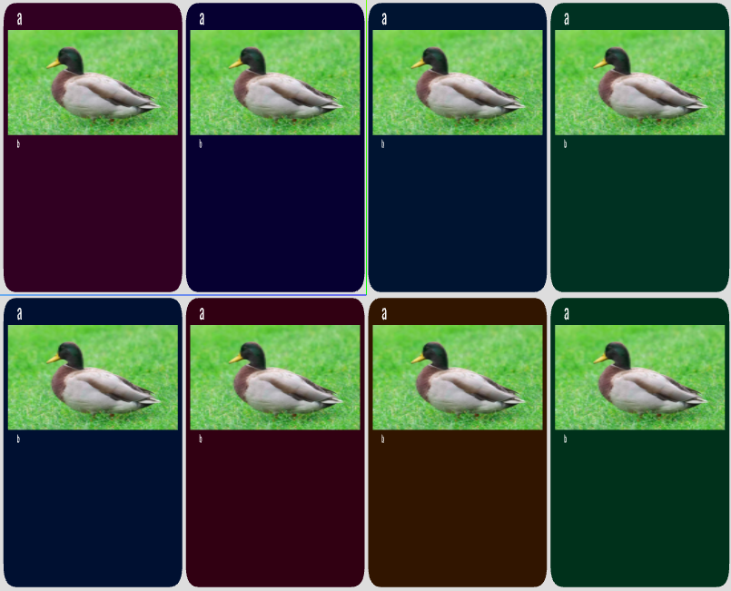The day after making the blender space ship I decided it was time to make a terrible website on which I would be able to log all the projects I enjoy investing time in. The result is this sort of deck of cards, each one describing something I find worth of sharing. It took a full day for me to make the cards, animate and modularise them, without ever having touched Javascript before. Quite satisfied.


BLENDER SPEEDRUN

Drew some perspective drawing 2 days ago, wanted to see how it would look in Blender. Then spent the next day on learning how to use the application. Really intuitive, got a good grasp thanks to this fellow on YouTube: Imphenzia. I then decided to see if I could preview it on a github page I had recently created (This one). After a solid day of work my shitty 3D model is viewable on a website from anywhere around the world!

ANKI WORLD
Using the opensource application ANKI, I was able in the span of a month, 20 minutes a day, to memorise all countries, capitals, geolocations and flags. This totaled to around 10 hours of work. It also allowed me to realise the potential of Anki. I have used it since to memorize a multitude of other subjects that you can find in other cards. As a side note, I chose to also memorise the cantons of Switzerland, their capital and coat of arms, as well as the regions of France.